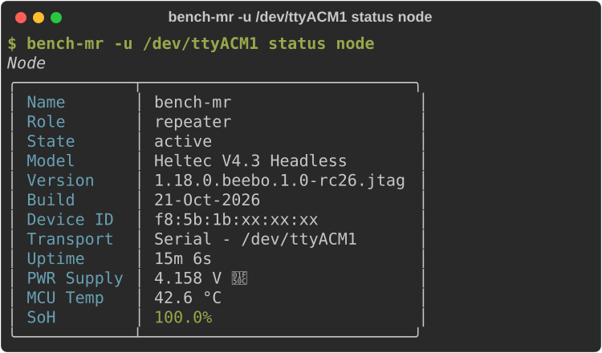
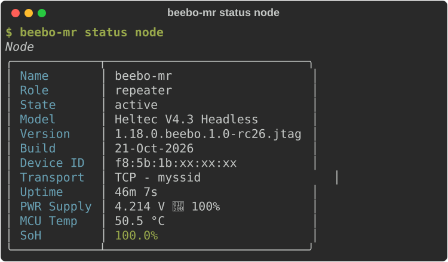

Install and Connect¶
The Quick Start needs only a phone and covers flashing the
firmware (a board that never ran MeshCore needs a stock image first, see
Troubleshooting); later updates go over the air, see
Update and Service a Node. This page is for the optional beebo
command line: installing it, choosing a transport (USB, BLE or WiFi), connecting from the
CLI or from a MeshCore app, and node aliases. Interactive mode, completion and the guided setup are under Commands.
Install the CLI¶
The beebo CLI is a Python package for beebo-specific device operations: OTA updates, transport selection, RF measurement and analysis. It needs Python 3.11 or newer (tested up to 3.14) and nothing else: no git and no source checkout.
$ python -m venv beebo-env
$ source beebo-env/bin/activate # Windows: beebo-env\Scripts\activate
$ pip install beebo-cli
$ beebo --version
The CLI installs from PyPI. To get the CLI that matches a firmware release, pin its version, which the release notes give: pip install "beebo-cli==<version>". Update with pip install --upgrade beebo-cli.
The charts and statistics of beebo analyze and beebo monitor plot need extra libraries, which are not installed by default:
$ pip install "beebo-cli[analysis]"
The CLI holds cryptography below version 49, because later releases ship macOS wheels for Apple silicon only and an Intel Mac would try to compile Rust. The CLI carries its own copy of the MeshCore library, with beebo's additions, so it installs beside the standard meshcore-cli without touching it. beebo --install-completion sets up tab completion (see Commands).
For general mesh usage (messaging, contacts, channels), and some beebo features, install the standard meshcore-cli the same way:
$ pip install meshcore-cli
Select Transport¶
Beebo supports three transports — BLE, TCP (WiFi), USB — each individually enabled by a persistent setting.
BLE and TCP share the board single 2.4 GHz radio and are mutually exclusive at runtime: only one of them is active, and enabling one disables and powers down the other, so there is no BT/WiFi coexistence overhead to worry about. USB is not part of this exclusion — it stays available alongside whichever of BLE/TCP is active, and can run a companion session over the cable without disturbing wireless. Among enabled transports, the first to deliver a frame locks the session; the others stay disabled until it disconnects. Although it is possible to turn off all transports to minimize power consumption, at least one transport is always available at boot time, so the node is never left physically unreachable.
The default out of the box is BLE and USB on, TCP off.
Connecting with USB¶
Plug the board in over USB and pass its serial port with -u/--usb.
For instance in Linux (use equivalent port in Windows or MacOS):

Connecting with BLE¶
USB is enabled by default alongside BLE, so it is the simplest way to get connected on first boot without pairing over the air. BLE itself is also on by default — pass its address with -b/--ble (or scan to discover nearby devices):
$ beebo -b scan status node
Scanning for BLE devices...
beebo AA:BB:CC:DD:EE:FF
$ beebo -b AA:BB:CC:DD:EE:FF status node
╭─────────────┬─────────────────────────╮
│ Name │ beebo │
│ Role │ companion │
│ Model │ Heltec V4.3 Headless │
│ Version │ 1.18.0.beebo.1.0 │
│ Build │ 04-Jul-2026 │
│ Transport │ BLE - AA:BB:CC:DD:EE:FF │
╰─────────────┴─────────────────────────╯
Connecting with WiFi¶
WiFi is off by default and needs an SSID and password before first use. Enter them over a transport that is already working, USB or BLE, in either of two ways.
From the MeshCore app (v1.18.0 or newer), in the CLI screen of the node you are connected to. The password is written but never read back:
set wifi.ssid myssid
OK - reboot to apply
set wifi.pwd mypassword
OK - reboot to apply
settings node.transport.tcp on
Turning WiFi on turns BLE off, because they share the radio, so an app connected over BLE loses the link. Reconnect over WiFi with the node's IP address, or keep USB for the app.
From the beebo command line (BLE works identically, just swap -u /dev/ttyACM0 for -b <address>):
$ beebo -u /dev/ttyACM0 settings companion.node.wifi.ssid myssid
companion.node.wifi.ssid = myssid
$ beebo -u /dev/ttyACM0 settings companion.node.wifi.password
New companion.node.wifi.password:
Confirm companion.node.wifi.password:
companion.node.wifi.password = ********
$ beebo -u /dev/ttyACM0 settings companion.node.transport.tcp on
companion.node.transport.tcp = on
Once provisioned and enabled, connect with -t/--tcp and the device's IP address or name, or through an alias that already holds it:

Connecting with MeshCore Apps¶
Beebo FW is backward compatible with the standard MeshCore companion applications, both desktop and smartphone, so no beebo-specific client is required for everyday mesh use — the beebo CLI is only needed to unlock beebo-specific features (OTA, transport selection, RF measurements).
The MeshCore companion apps (Android, iOS, Web) connect over BLE or WiFi.
- BLE — The board advertises as a MeshCore BLE device. The default pairing PIN is
123456. - WiFi — Once provisioned, the board listens on TCP port 5000. Connect using the device IP.
Connection options and node aliases¶
Every command shares one set of transport options — -u/--usb PORT, -b/--ble ADDRESS, -t/--tcp HOST — to pick how it reaches a node; at most one may be given, and omitting all three falls back to console.transport (see Console Configuration).
Rather than typing -t <host> on every invocation, each node gets its own device alias: a plain ln -s $(which beebo) <alias> symlink whose own ~/.beebo/nodes/<alias>/profile.toml pre-fills the transport (per-alias completion needs its own --install-completion step, see Commands). Our example companion and repeater nodes are set up this way as beebo and gatto — beebo status and gatto status below are exactly beebo status and gatto status with the host baked into the alias, connecting over WiFi/TCP by default. For a node with no alias yet, or to override one for a single call, pass -t/-u/-b directly (with a node name/IP for -t, since that assumes it resolves on your local network).